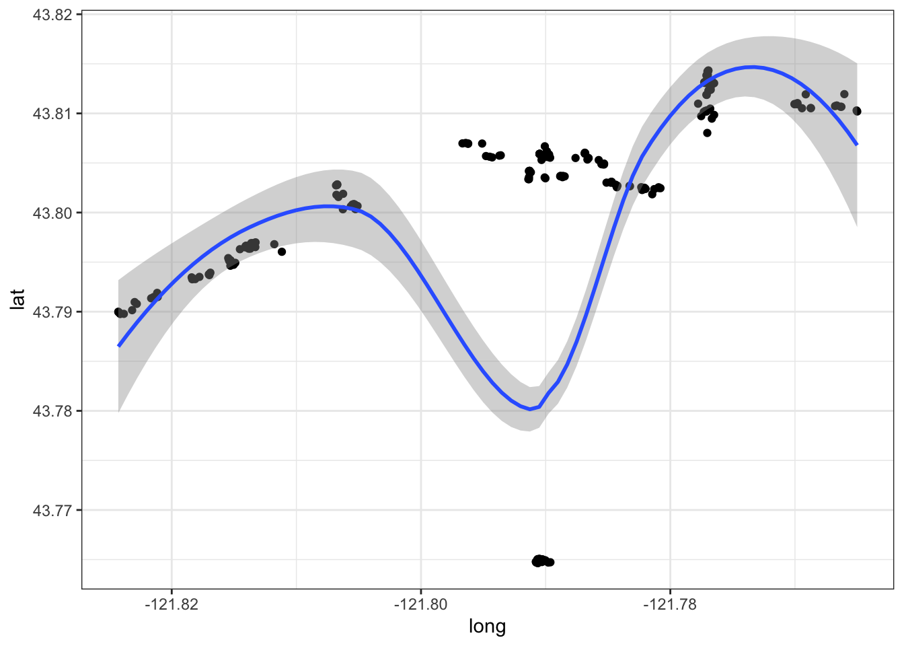
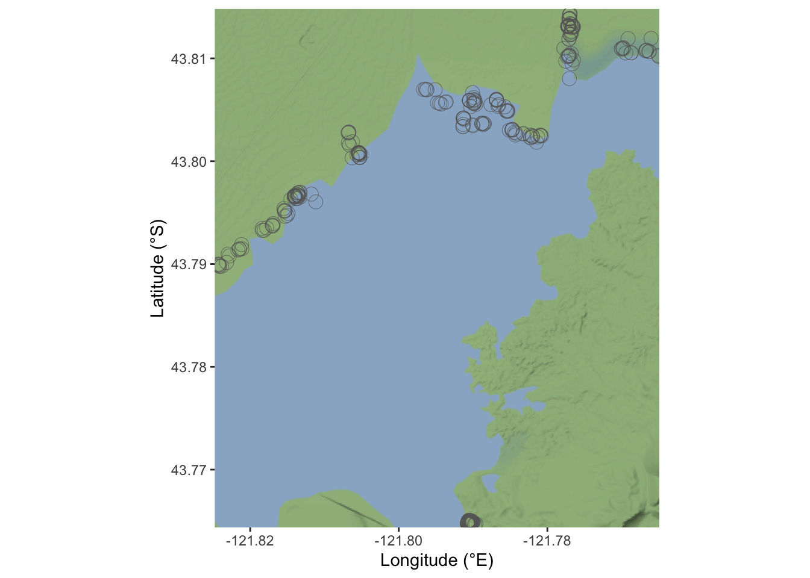

3.1 Look at oregonfrogs data
Let’s have a first sight at the data based on location. The first thing to notice is that points (frogs) are aligned following some sort of linearity. But, what is the difference from other data, is that now these points are following an environment. Let’s have a look at it.
ggplot(data = frogs_location, aes(x=long,y=lat))+
geom_point() +
geom_smooth(method = "loess") +
theme_bw()
3.1.1 Let’s map the lake!
How do we set the map for the location of our Rana Pretiosa in the Crane Prairie Reservoir?
In the study page we can find the BOX, the box is the four corner reference points, bounding our interested area.
Bounding Box: https://www.sciencebase.gov/catalog/item/imap/60ba5a00d34e86b9388d86bc
Bounding Box[-121.824775, 43.764375, -121.764923, 43.814821]
The area can be retrieved with {OpenStreetMap} package by : Ian Fellows and visualized with a nice resolution with the plot.OpenStreetMap() or simply the plot() function. The {OpenStreetMap} doesn’t work the same for all systems. You’ll might need to use another package, such as {ggmap} which provide the same background map to use with {ggplot2}.
So, don’t run this part if you incurr issues with {OpenStreetMap}, jump on the next one.
library(OpenStreetMap)
map <- openmap(c(43.764375,-121.824775),c(43.814821,-121.764923))
OpenStreetMap::plot.OpenStreetMap(map)
wider_map <- openproj(map)
base_map <- OpenStreetMap::autoplot.OpenStreetMap(wider_map) +
geom_point(data = frogs_location,
aes(x = long, y = lat),
shape=21,stroke=0.2, size = 4,
color="grey40") +
xlab("Longitude (°E)") + ylab("Latitude (°S)")Figure 3.3: Crane Prairie Reservoir
In this map is made with {ggmap} and {ggplot2} for the frogs locations.
library(ggmap)box=c(43.764375,-121.824775,43.814821,-121.764923)
crane_reservoir <- get_stamenmap(bbox = c(left = -121.824775,
bottom = 43.764375,
right = -121.764923,
top = 43.814821),
zoom = 13, color = c("color"),
maptype = "terrain-background")base_map <- ggmap(crane_reservoir) +
geom_point(data = frogs_location,
aes(x = long, y = lat),
shape=21,stroke=0.2, size = 4,
color="grey40") +
xlab("Longitude (°E)") + ylab("Latitude (°S)")
base_map